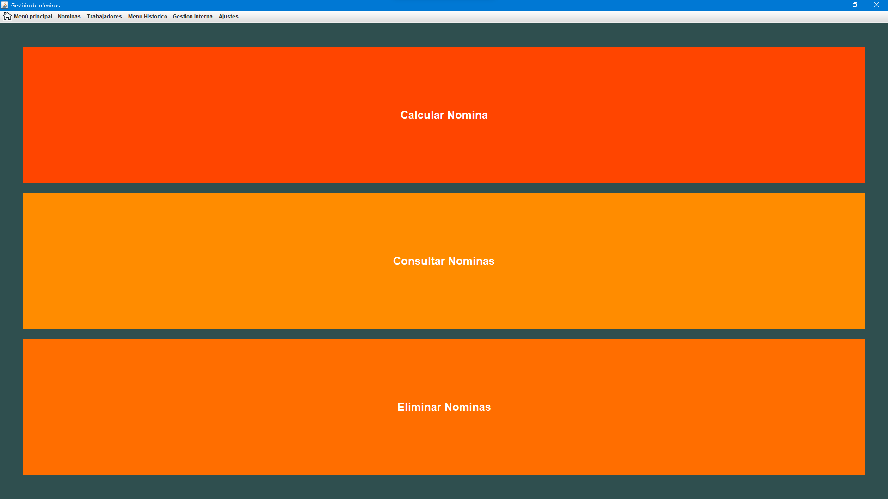

Nómina
En la sección "Nómina" podrás realizar el cálculo de las nóminas de los trabajadores. Aquí encontrarás herramientas y opciones para ingresar los datos necesarios y obtener los cálculos correspondientes a las nóminas de los empleados.Ademas podras consultar las nominas existentes y eliminarlas.
